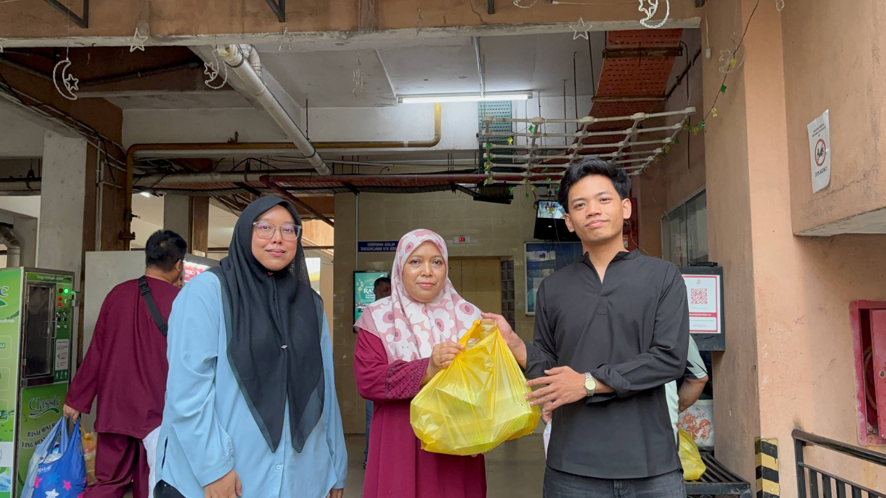
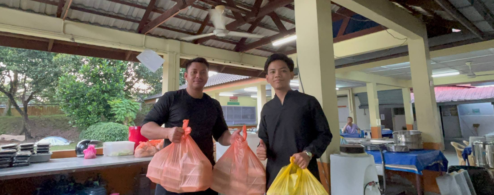
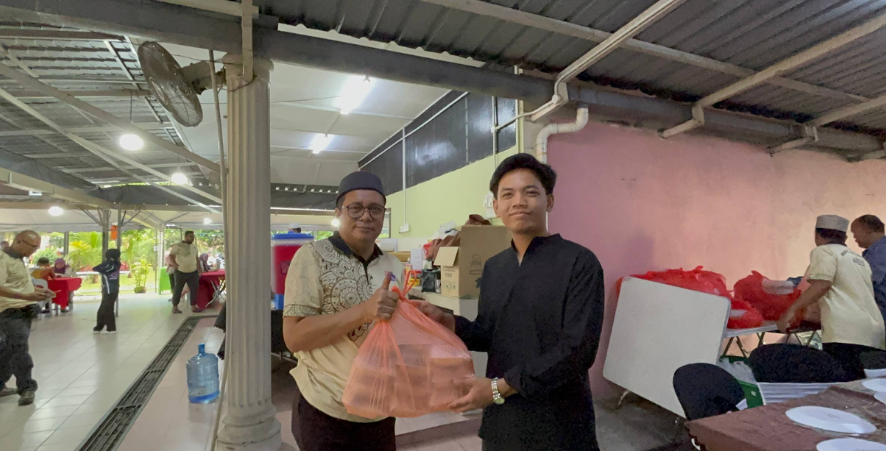
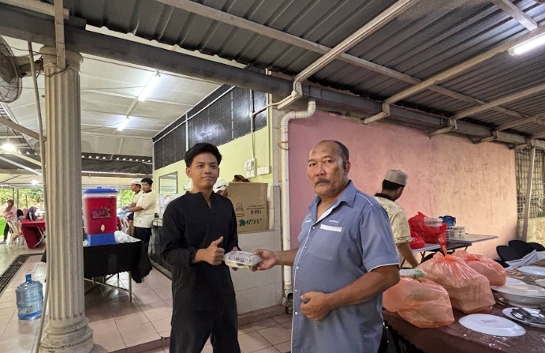
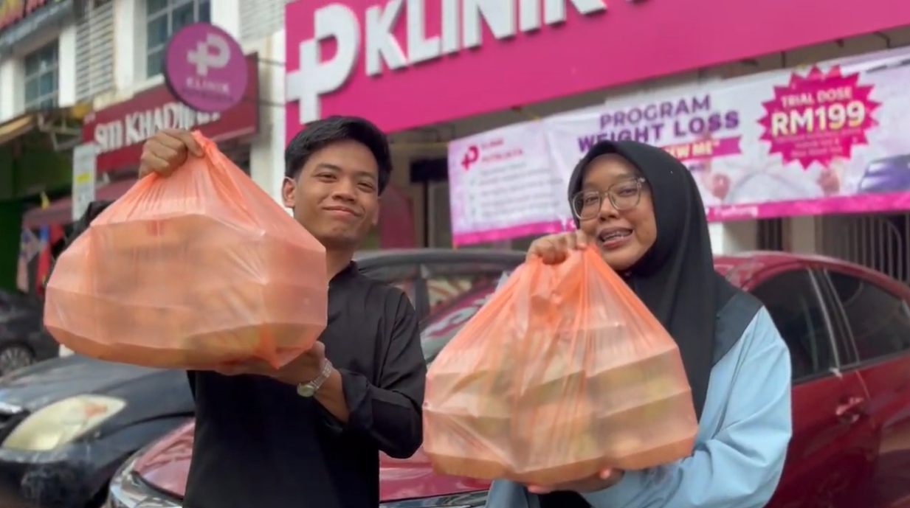
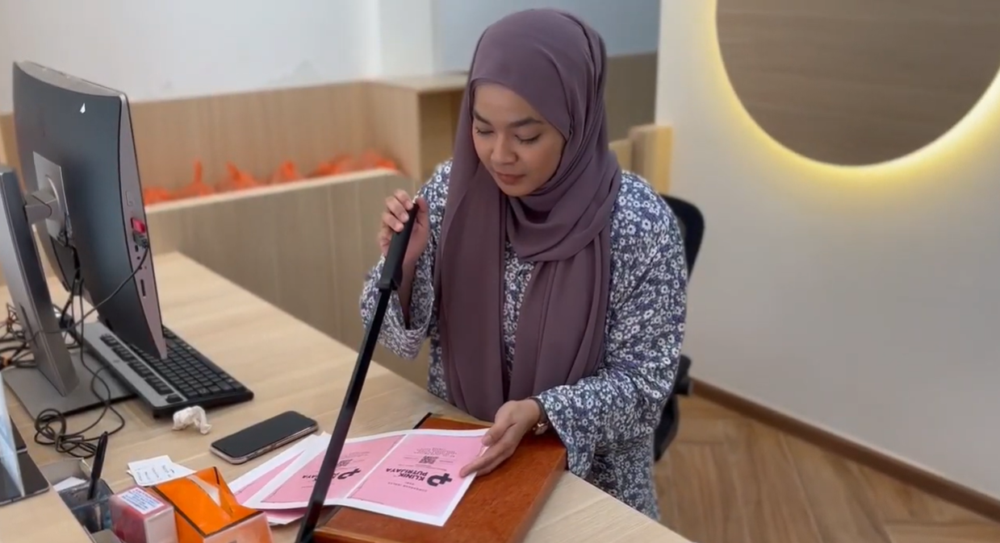
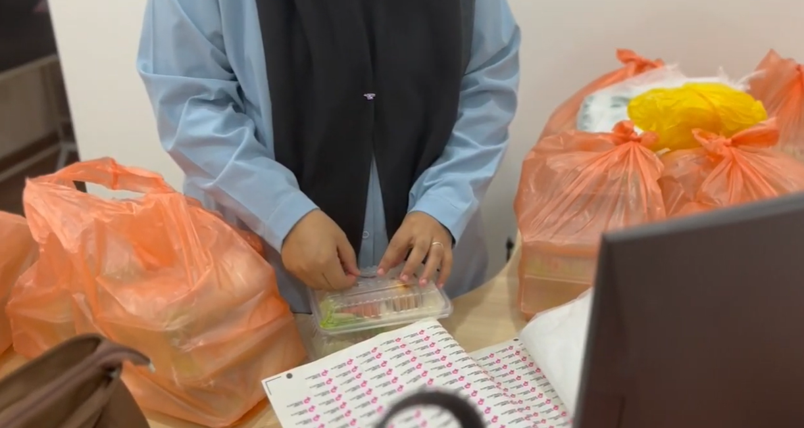

Community Outreach
Berkongsi Rezeki — Ramadan Food Distribution
Iftar meals distributed to Masjid Saidina Othman, Masjid Al-Najihin and Surau Al-Kasturi around Bandar Sri Permaisuri during Ramadan.
Watch on TikTok →